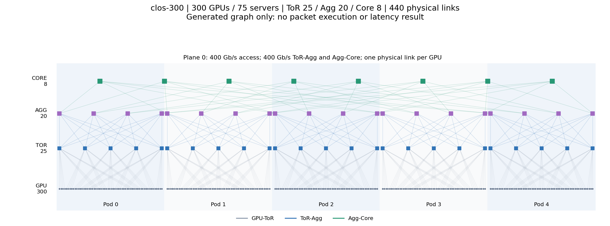
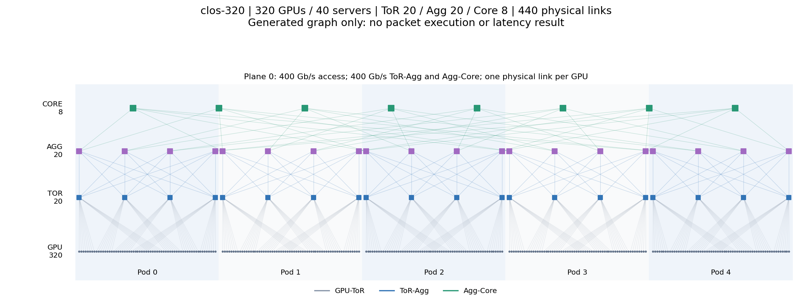
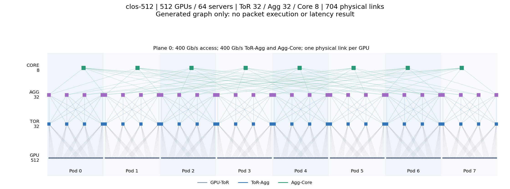
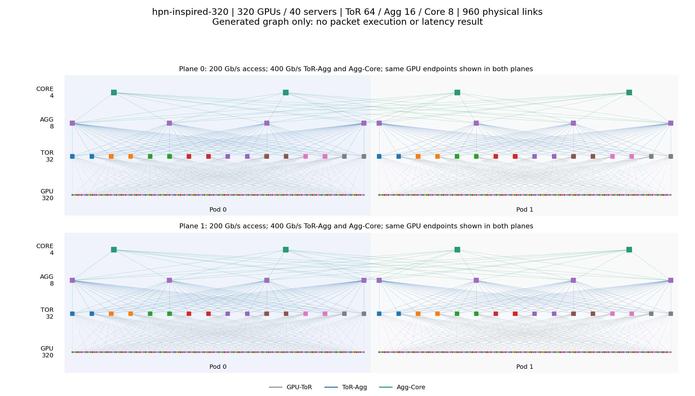
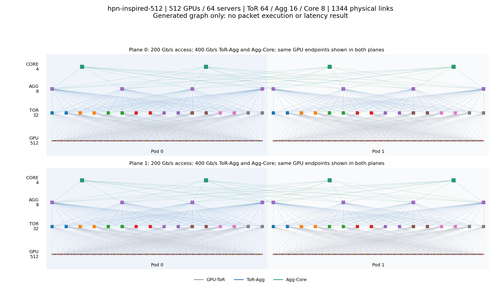
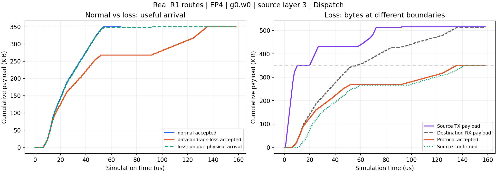
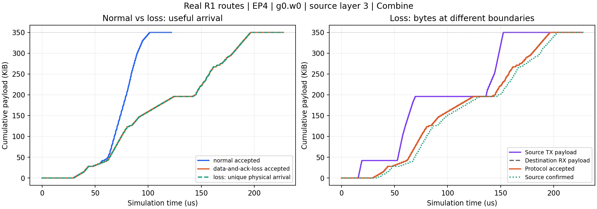

2026-10-28 · Asia/Shanghai · 本地静态交付
百B模型与跨服务器网络：
结构、部署约束与有效数据到达
两类证据分开：本轮六套300/500及320/512卡拓扑已实际生成并静态核对，没有执行百卡包级网络。下面的累计到达曲线来自已完成的4卡/EP4真实专家路由实验，不是大规模模型的性能结果。
1. 有现成的百B以上模型，但不能只改名字
SimAI固定版本中已找到Qwen3-235B、DeepSeek-V3及R1-0528配置，AICB也提供训练workload和推理生成器。当前最适合先接入本系统的是Qwen3-235B的GQA全MoE结构。根据上游形状核算为235,093,634,560参数，不是先前人为声明的119B模型。
固定版本：SimAI a57d765c5478；AICB 23eec3c48ca2。推理说明中的“部分支持”“适配中”仍然保留，不能把配置文件的存在当作整模型NS-3执行成功。AICB的DeepSeek默认文件还声明32个冗余专家、共288专家，不能直接替代我们真实路由的256个逻辑专家。
2. 建议用320/512卡；300/500卡结构也已提供
300卡=75台四卡服务器，500卡=125台四卡服务器；320卡=40台八卡服务器，512卡=64台八卡服务器。每卡NIC总带宽400 Gb/s，GPU型号H100只是描述标签，没有硬件计时校准。
在当前“每个EP组均匀分配全部专家”的约束下，EP大小须整除专家数。若300/500张卡全部划为等大EP组，Qwen的128专家与R1的256专家最多都只能采用EP4。Qwen BF16仅权重即约120.65 GiB/rank，超过声明的80 GiB，因此精确300/500卡只交付拓扑，不伪造可运行的BF16整模型配置。可以用296/496张工作卡加4张备用卡、采用不同大小的EP组，或后续引入TP/PP、量化；这些选择要单独建立语义和资源模型。
本轮为320/512卡提供跨Pod交错分组的EP64模型配置：分别5/8个独立推理副本，每rank每层2个专家。不是一次320/512-rank All-to-All，也不执行训练DP AllReduce。当前没有TP/PP拆分，注意力与非专家权重在组内复制。
输入为每rank一个已就绪KV的Decode请求，初始上下文2048 token，继续生成2 token；320/512卡全局并发不同，不能直接比较总时延并称为公平强扩展。专家选择为合成路由，R1真实路由不能改名当Qwen路由。显存核算仅含权重和KV，未含激活、工作区与通信缓冲；声明计算成本不预测真实H100性能。
3. 六套网络结构：参数与实际连线
下行/上行比大于1表示存在潜在汇聚瓶颈，不能称为无阻塞网络。Clos的所有层均400G；HPN启发结构为8 rail、2 plane，每GPU两条200G接入共享400G NIC预算，上层均400G。它使用普通电交换机，Agg/Core跨rail共享，不包含OCS重构、生产HPN的完整实现或机内NVLink仿真。链路均声明1µs传播时延。
clos-300

每个方块为一台交换机，底部每个点为GPU端点，线为实际生成的物理链路。双plane视图重复展示同一批GPU；多rail以颜色区分，Agg/Core由rail共享。
PDF · SVG · 可修改配置 ·
ASTRA拓扑 · SimAI拓扑格式
clos-500
每个方块为一台交换机，底部每个点为GPU端点，线为实际生成的物理链路。双plane视图重复展示同一批GPU；多rail以颜色区分，Agg/Core由rail共享。
PDF · SVG · 可修改配置 ·
ASTRA拓扑 · SimAI拓扑格式
clos-320

每个方块为一台交换机，底部每个点为GPU端点，线为实际生成的物理链路。双plane视图重复展示同一批GPU；多rail以颜色区分，Agg/Core由rail共享。
PDF · SVG · 可修改配置 ·
ASTRA拓扑 · SimAI拓扑格式
clos-512

每个方块为一台交换机，底部每个点为GPU端点，线为实际生成的物理链路。双plane视图重复展示同一批GPU；多rail以颜色区分，Agg/Core由rail共享。
PDF · SVG · 可修改配置 ·
ASTRA拓扑 · SimAI拓扑格式
hpn-inspired-320

每个方块为一台交换机，底部每个点为GPU端点，线为实际生成的物理链路。双plane视图重复展示同一批GPU；多rail以颜色区分，Agg/Core由rail共享。
PDF · SVG · 可修改配置 ·
ASTRA拓扑 · SimAI拓扑格式
hpn-inspired-512

每个方块为一台交换机，底部每个点为GPU端点，线为实际生成的物理链路。双plane视图重复展示同一批GPU；多rail以颜色区分，Agg/Core由rail共享。
PDF · SVG · 可修改配置 ·
ASTRA拓扑 · SimAI拓扑格式
4. Collective有效累计到达：真实4卡实验
四份DeepSeek-R1-AWQ/MMLU请求，EP4，256专家/Top8，每rank每层64专家；实际执行源层3—4、两个Decode步骤。100G接入、25G上层的两Pod Clos，多阶段共享同一ns-3网络。以下选择首轮、源层3的Dispatch和Combine，不是全部76条消息的累加曲线。
全任务76条消息，逻辑有效数据2,609,152 B；正常完成333.298µs，构造故障完成417.998µs。故障为一个数据序号丢两次、另一消息最终ACK丢一次；不是50%全网随机丢包。
Dispatch：把输入发给专家

下载PDF
Combine：把专家结果发回

下载PDF
怎么看：横轴为仿真时间，纵轴为累计payload。左图比较正常和故障下接收端实际接受的有效字节；右图区分源发送、物理接收、协议接受和源确认。
重传会让发送/物理接收量增加，但不会增加任务所需有效数据。当前锁定的Go-Back-N接收端只接受连续序号，乱序包即使物理到达也可能被丢弃，因此“去重到达”会早于“协议有效到达”。ACK丢失可能使接收端早已收齐、发送端仍未确认。这里的接受是NIC协议语义，不是GPU计算已可见。
累计数据曲线中的平台只表示有效字节没有增长；要判定由丢包、队列还是前驱依赖造成，应结合逐包与依赖记录，不能只凭曲线归因。
5. 怎样改参数和复现
网络输入与模型输入分别保存在inputs/。调整Pod、交换机数量、rail/plane、上联数、链路速率后，重新生成拓扑；调整batch、专家部署与计算声明后，重新核算容量。当前配置没有替用户运行新的大规模网络。
PYTHONPATH=python python3 experiments/large_model_scaleout/generate.py --repository "$PWD" --output /path/to/new-topologies
PYTHONPATH=python python3 experiments/large_model_scaleout/prepare_models.py --sources experiments/large_model_scaleout/upstream --base examples/scaleout_arrivals/declared-119b.json --output /path/to/new-models
完整绘图命令见实验目录README。每次使用新输出目录，保留失败与原有结果。核验摘要 · 模型核算 · 网络规模 · 原曲线摘要